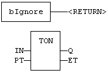
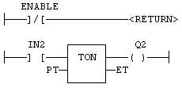

Statement
Jump to the end of the program.
The RETURN statement jumps to the end of the program. In FBD language, the return statement is represented by the "<RETURN>" symbol. The input of the symbol must be connected to a valid Boolean signal. The jump is performed only if the input is TRUE. In LD language, the "<RETURN>" symbol is used as a coil at the end of a rung. The jump is performed only if the rung state is TRUE. In IL language, RET, RETC, RETCN and RETNC instructions are used.
When used within an action block of a SFC step, the RETURN statement jumps to the end of the action block.
IF NOT bEnable THEN
RETURN;
END_IF;
The rest of the program will not be executed if bEnabled is FALSE.
In this example the TON block will not be called if bIgnore is TRUE:

In this example the second rung will be skipped if ENABLE is FALSE:
